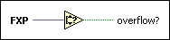

Fixed-Point Overflow? Function
Owning Palette: Comparison Functions
Requires: Base Development System
Returns TRUE if FXP includes an overflow status and FXP is the result of an operation that overflowed. Otherwise, this function returns FALSE.

 Add to the block diagram Add to the block diagram |
 Find on the palette Find on the palette |